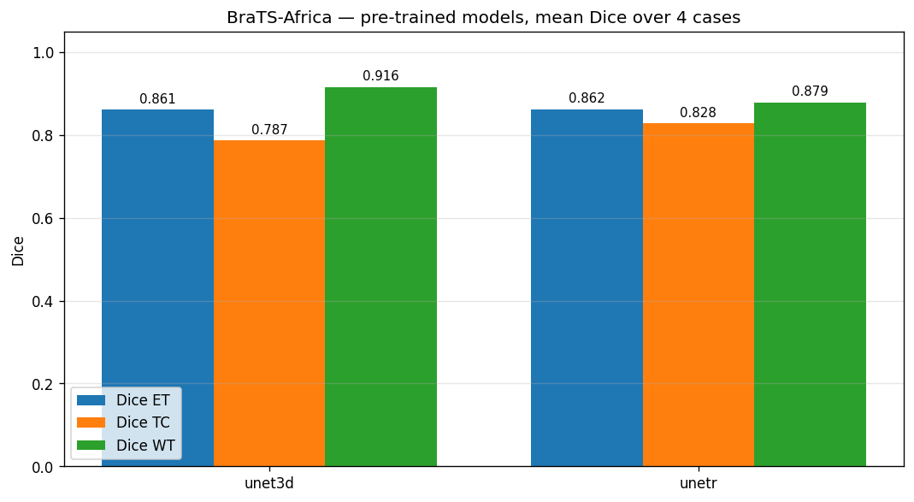
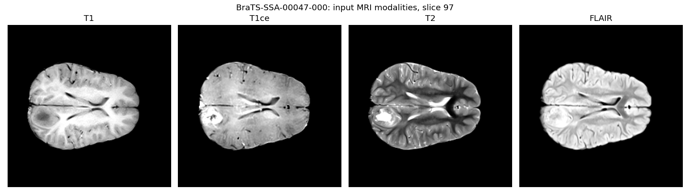
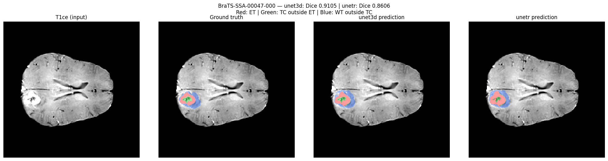
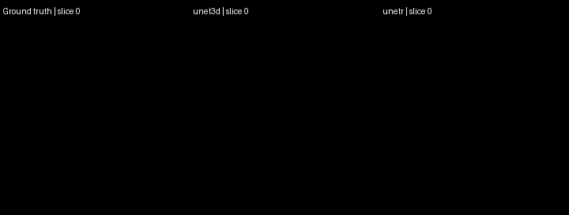
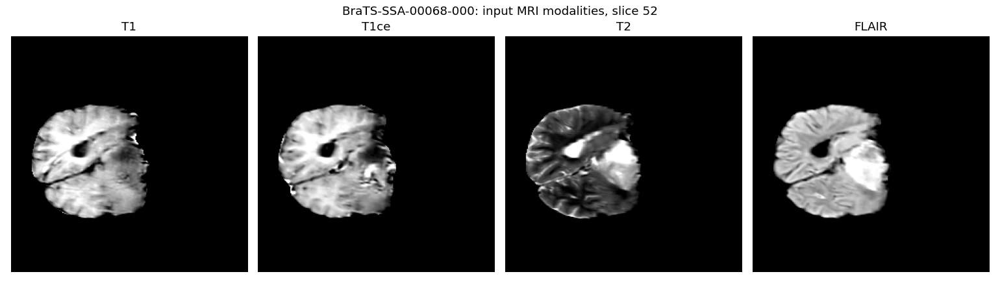
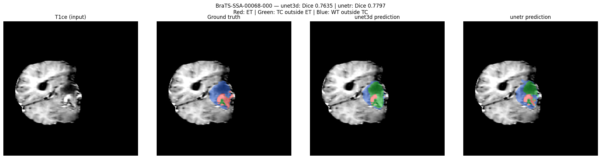
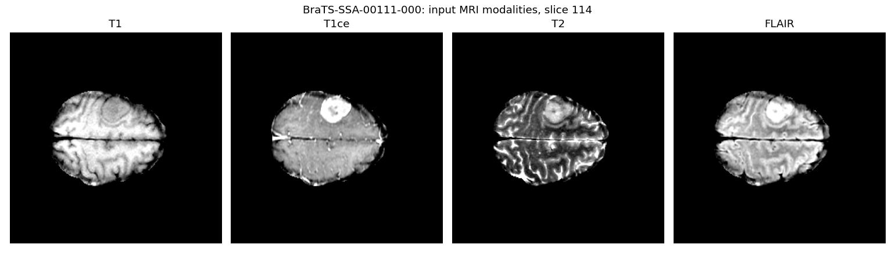
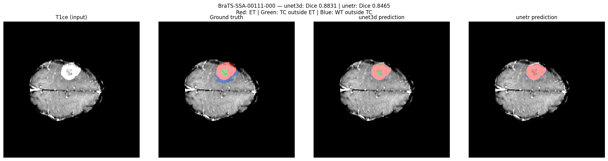
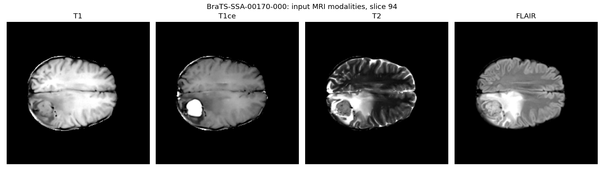
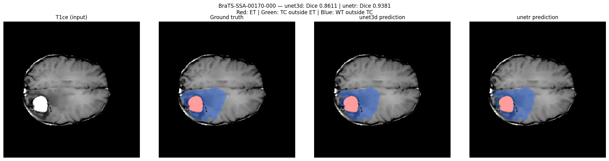

4 seeded sample cases; no training or fine-tuning. Device: cuda. Both models use the same patients, preprocessing and threshold.
| dice_ET | dice_TC | dice_WT | dice_mean | hd95_ET | hd95_TC | hd95_WT | hd95_mean | inference_s | |
|---|---|---|---|---|---|---|---|---|---|
| model | |||||||||
| unet3d | 0.8611 | 0.7868 | 0.9158 | 0.8546 | 5.6758 | 10.7677 | 2.6346 | 6.3594 | 20.4751 |
| unetr | 0.8618 | 0.8281 | 0.8788 | 0.8562 | 2.4415 | 8.6011 | 5.8798 | 5.6408 | 2.2121 |
Dice: higher is better. HD95: lower is better, in millimetres. Scores are measured on these cases, not copied from the model author's validation results.

| case_id | cohort | model | dice_ET | dice_TC | dice_WT | dice_mean | hd95_ET | hd95_TC | hd95_WT | hd95_mean | inference_s |
|---|---|---|---|---|---|---|---|---|---|---|---|
| BraTS-SSA-00047-000 | 95_Glioma | unet3d | 0.8971 | 0.9381 | 0.8964 | 0.9105 | 1.5572 | 1.4142 | 2.8284 | 1.9333 | 52.5424 |
| BraTS-SSA-00047-000 | 95_Glioma | unetr | 0.8561 | 0.9082 | 0.8174 | 0.8606 | 2.4495 | 2.2361 | 9.6954 | 4.7936 | 2.2165 |
| BraTS-SSA-00068-000 | 95_Glioma | unet3d | 0.7023 | 0.6352 | 0.9529 | 0.7635 | 4.6904 | 12.1655 | 1.7321 | 6.1960 | 9.6024 |
| BraTS-SSA-00068-000 | 95_Glioma | unetr | 0.7722 | 0.6393 | 0.9276 | 0.7797 | 3.0000 | 12.4499 | 6.7007 | 7.3835 | 2.1930 |
| BraTS-SSA-00111-000 | 51_OtherNeoplasms | unet3d | 0.8782 | 0.9120 | 0.8592 | 0.8831 | 2.8284 | 2.8284 | 3.7417 | 3.1328 | 9.7899 |
| BraTS-SSA-00111-000 | 51_OtherNeoplasms | unetr | 0.8383 | 0.8693 | 0.8319 | 0.8465 | 3.3166 | 3.4641 | 4.1231 | 3.6346 | 2.2034 |
| BraTS-SSA-00170-000 | 51_OtherNeoplasms | unet3d | 0.9668 | 0.6618 | 0.9548 | 0.8611 | 13.6272 | 26.6627 | 2.2361 | 14.1753 | 9.9659 |
| BraTS-SSA-00170-000 | 51_OtherNeoplasms | unetr | 0.9807 | 0.8953 | 0.9384 | 0.9381 | 1.0000 | 16.2542 | 3.0000 | 6.7514 | 2.2354 |









Small seeded sample; not a clinical diagnostic tool. No independent training-data overlap audit was performed. Labels follow the repository mapping of 3 to 4 for enhancing tumor. One-sided empty masks receive the repository fixed HD95 penalty. Animated images traverse slices of a 3D scan; they are not surface reconstructions.
Original implementation | Dataset | BraTS-Africa dataset paper